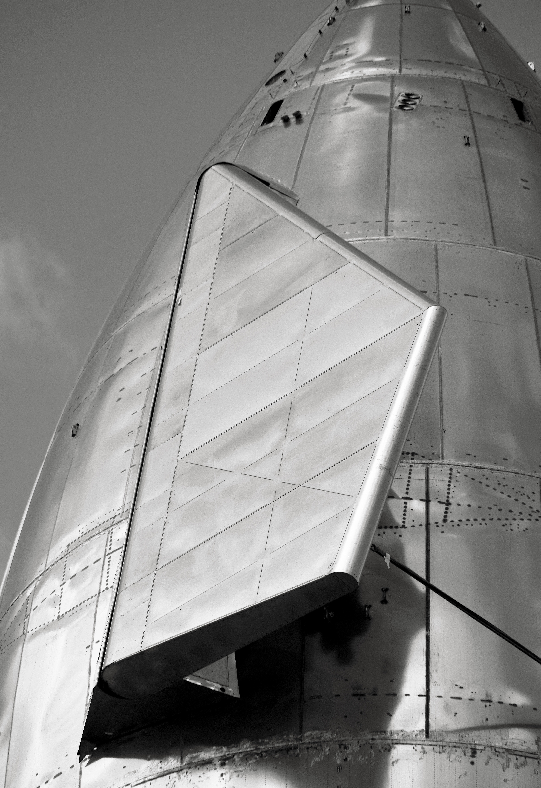
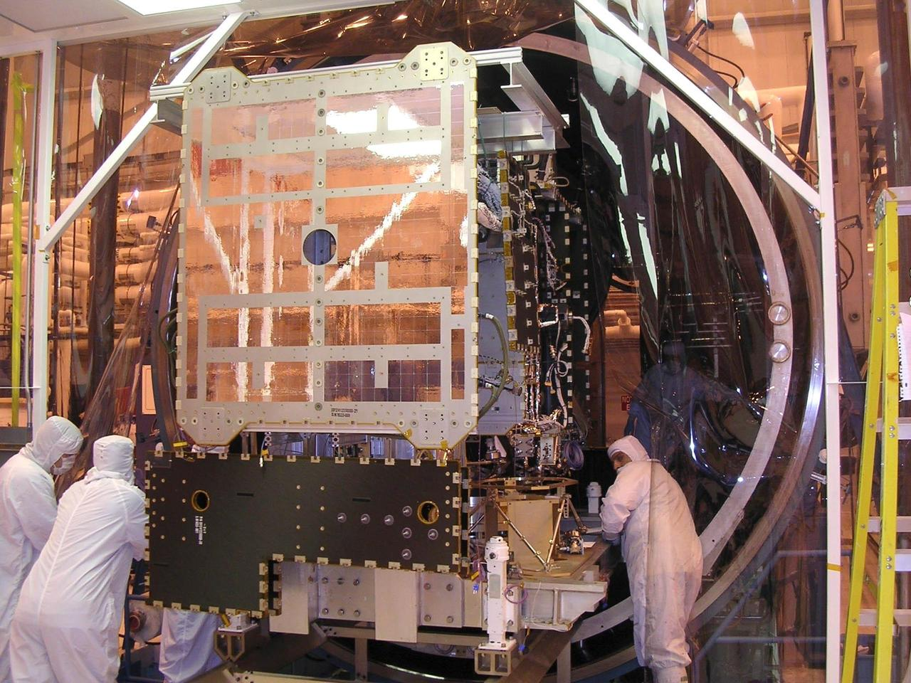

.jpg){kind=link}

Dimostrato
Rientri sperimentali e osservazione dei problemi termici in volo.
Sistemi · Scheda tecnica 14
Il sistema che permette alla nave di affrontare il rientro atmosferico. Materiali, giunti, orientamento e manovre contano insieme alle singole piastrelle.
Stato al 10 ottobre 2026: In sviluppo
Leggi i dati Controlla le fonti
Riferimento: documenti citati a fondo pagina, letti con le rispettive date. Stato editoriale al 10 ottobre 2026.
Il rientro trasforma energia del moto in riscaldamento del gas e del veicolo. L’assetto decide quale superficie riceve il carico; la protezione deve funzionare anche vicino a aperture, bordi e meccanismi dei flap.
I prototipi e i voli integrati hanno utilizzato configurazioni diverse. Modifiche delle protezioni e dei flap sono risposte a problemi emersi nelle prove, non dettagli intercambiabili fra generazioni.
La sopravvivenza a un rientro non determina quanti voli siano possibili senza sostituzioni. Un ritorno da orbita terrestre non qualifica automaticamente un rientro da Marte, con condizioni energetiche e operative differenti.
Rientri sperimentali e osservazione dei problemi termici in volo.
Riusabilità della protezione come obiettivo di progetto.
Ispezioni, sostituzioni e prestazione ripetuta della configurazione recuperata.

Consultazione editoriale: 10 ottobre 2026. Le date dei singoli documenti sono distinte dalla data della scheda.